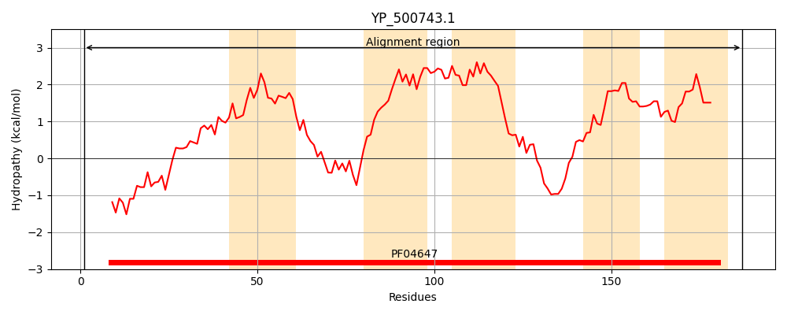
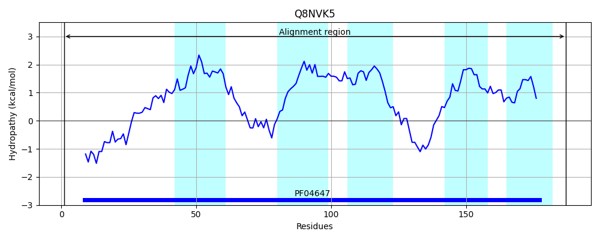
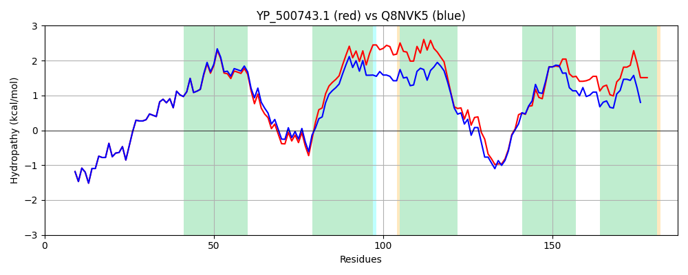

Hit Accession: Q8NVK5
Hit TCID: 9.B.46.1.1
Hit Description: gnl|BL_ORD_ID|16679 gnl|TC-DB|Q8NVK5|9.B.46.1.1 Accessory gene regulator B - Staphylococcus aureus (strain MW2).
Mach Len: 187
e:0.000000
Query TMS Count : 5
Hit TMS Count: 5
TMS-Overlap Score: 4.600000
Predicted Substrates:CHEBI:16670;peptide
BLAST Alignment:
Score: 797 , Bit scores: 311 bits, E-value: 5.5e-110, Alignment length: 187, Percentage identity: 79
Query: 1 MNYFDNKIDQFATYLQKRNNLDHIQFLQVRLGMQVLAKNIGKLIVMYTIAYILNIFLFTLITNLTFYLIRRHAHGAHAPSSFWCYVESIILFILLPLVIVNFHINFLIMIILTVISLGVISVYAPAATKKKPIPVRLIKRKKYYAIIVSLTLFIITLIIKEPFAQFIQLGIIIEAITLLPIFFIKED 187
MNYFDNKIDQFATYLQKRNNLDHIQFLQVRLGMQVLAKNIGKLIVMYTIAYILNIF+FTLITN++FYLIRR+AHGAHAPSSFWCY+ESI LFI+LPL++++FHIN +M+ L +IS+GV+ YAPAATKKKPIP RL+K+K+Y++II+S LFIITL +KEP+ QFIQLGIII+AITLLPI++ KED
Sbjct: 1 MNYFDNKIDQFATYLQKRNNLDHIQFLQVRLGMQVLAKNIGKLIVMYTIAYILNIFIFTLITNISFYLIRRYAHGAHAPSSFWCYIESITLFIVLPLLVLHFHINETLMMFLALISVGVVIKYAPAATKKKPIPARLVKQKRYFSIIISTILFIITLFVKEPYTQFIQLGIIIQAITLLPIYYSKED 187 | Protein Hydropathy Plots: |
|---|
|  |  |
Pairwise Alignment-Hydropathy Plot:
|
|---|
|  |